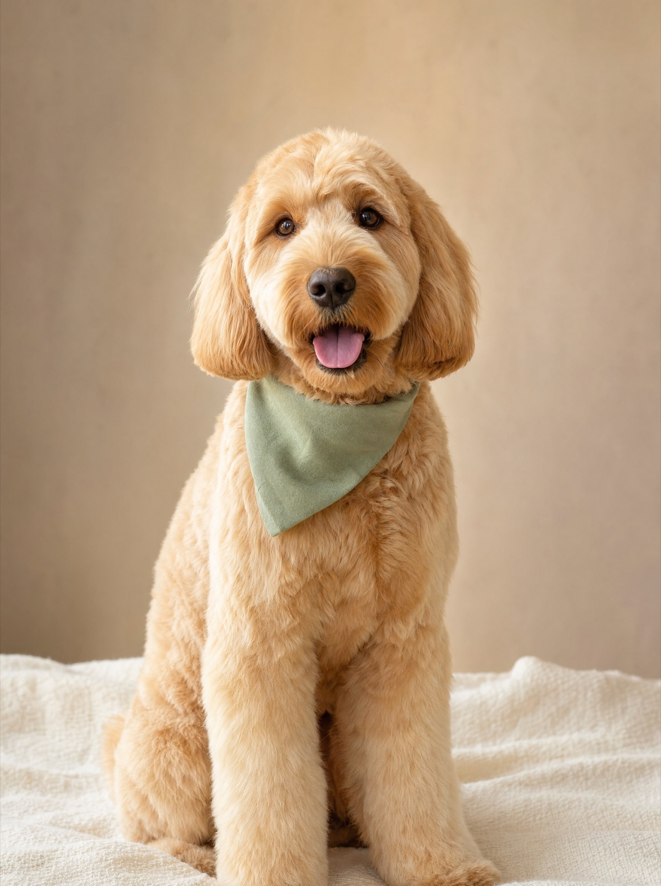
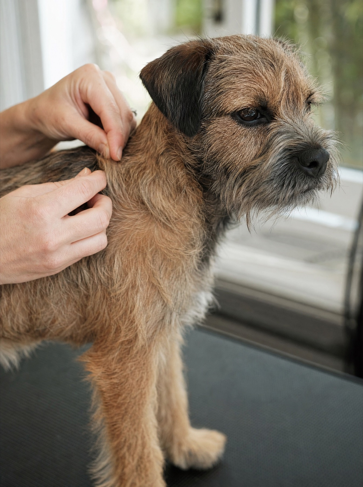
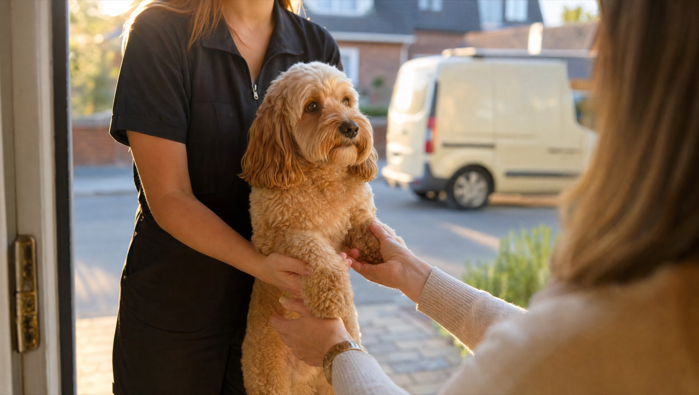
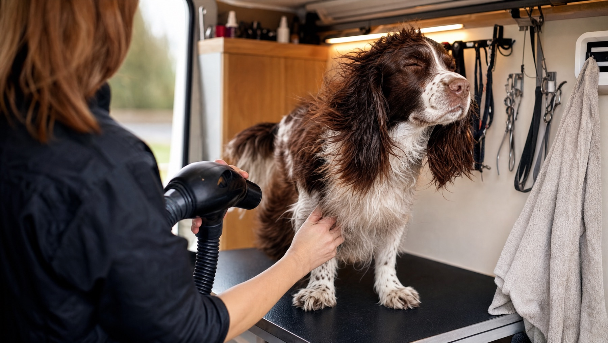
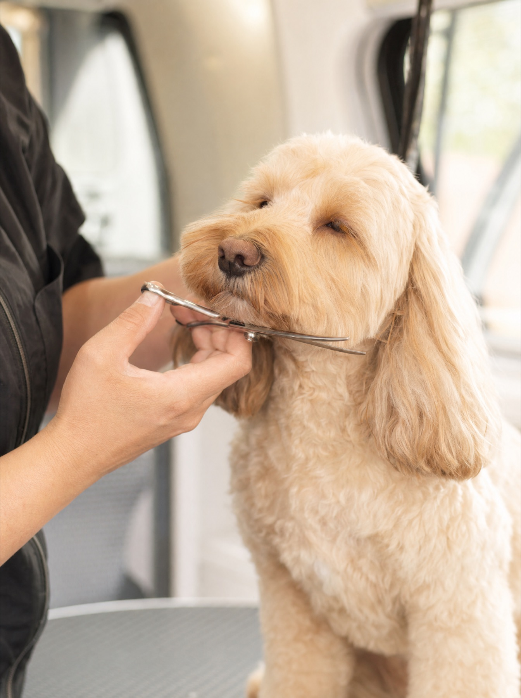

Full groom
Bath, blow dry, full clip or scissor to the shape that suits the breed and your life, nails, ears, and a finishing brush. For long and short coats.
mobile dog grooming · hertford · ware · hoddesdon
A fully equipped grooming van parked outside your door. No car journey, no kennel, no waiting room. Your dog, groomed calmly, back in your arms within the hour.
how it works
Most dogs find a busy salon stressful: other dogs, cages, hours away from home. In the van it is just your dog and the groomer, on your street, and then straight back inside.
Send a message with your dog's breed, size and what they need. You'll get a time and a quote.
Heated, water on board, everything inside. Your dog walks from your door into the van and nowhere else.
Groomed, dried, nails and ears done, and handed back looking like the dog you remember from the breeder's photos.
services
Priced by size and coat, quoted when you book, so there are no surprises on the doorstep.

Bath, blow dry, full clip or scissor to the shape that suits the breed and your life, nails, ears, and a finishing brush. For long and short coats.
The in-between visit: a proper wash, thorough dry, de-shed and tidy, nails and ears. Keeps the coat easy between full grooms.
For wiry coats — terriers, spaniels, dachshunds — the coat is stripped by hand, the traditional way, so it keeps its texture and colour instead of going soft under the clippers.
A short, gentle first visit: the sounds, the table, the dryer, lots of treats. Puppies who start this way are the calm adult dogs later.

Nail trims, ear cleaning, paw pads, sanitary trims, de-matting where it's kind to do so. On their own or added to any visit.
Nervous or older dog? Say so when you book. Visits are one dog at a time, so there's no rushing.
where the van goes
The van covers Hertford, Ware and Hoddesdon and the villages between. If you're just outside, ask — it's often a yes.


what owners say
Review quotes slot in here. The live site carries the real Facebook reviews, word for word with first names, once the owner has signed them off.
Three of the eight, rotating: the nervous dog who came back calm, the coat nobody else could manage, the puppy's first visit.
The Facebook recommend count pulled in live, so the number on the page is always the real one.

the groomer
This is where you tell people who you are: how long you've groomed, the breeds you love, the training you did, and why you went mobile. Two short paragraphs and a photo of you with a dog are all it needs.
Fully equipped van. Insured. One dog at a time, always.
bookings
Call or message with the breed, the size and what they need, and you'll get a time and a price. Nervous, elderly or first-timers welcome.
Book a groom
Breed, size, coat and what they need. You’ll get a time and a quote back, and a note of anything to have ready.
This page is a demo concept, so the form is deliberately wired to nothing — no message reaches Vanity Fur Groomers. On the real site this arrives in the inbox within seconds of someone pressing the button.
Concept — built by Ashton Studios for Vanity Fur Groomers. · ashtonstudios.uk